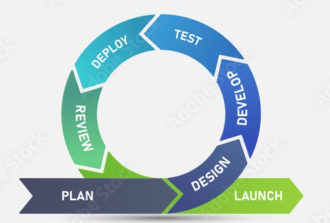

Agiilne arendusmudel on iteratiivne ja järkjärguline lähenemine tarkvaraarendusele, mis rõhutab paindlikkust, meeskonnatööd ja kliendi pidevat kaasamist. Erinevalt traditsioonilisest kosk-mudelist tarnitakse töötav tarkvara väikeste osadena.
Iga iteratsioon ehk sprint koosneb järgmistest sammudest:

Agiilse mudeli peamine tugevus on võime kiiresti muutustega kohaneda. Kuna tarkvaraprojektide nõuded muutuvad sageli, võimaldab agiilne lähenemine suunda korrigeerida ilma, et varem tehtud töö kaoks.
| Eelised | Puudused |
|---|---|
| Kiire ja regulaarne tagasiside kliendilt | Raske prognoosida projekti lõplikku maksumust |
| Kõrgem toote kvaliteet | Suur ajakulu koosolekutele |
| Paindlik nõuete muutmine arenduse käigus | Dokumentatsioon võib jääda tagaplaanile |